Unofficial - F5 Certification Exam Prep Material > Symposium 2026 - BIG-IP Administrator: Source | Edit on
Lab 2: Load Balancing, Monitoring and Persistence
Objectives:
- Configure and review the Ratio load balancing method
- Build and test priority groups
- Build a content monitor that looks for a receive string
- Build and review simple (source IP) persistence and cookie persistence
Ratio Load Balancing
- Go to Local Traffic>Pools and select www_pool and then Members from the top bar or you could click on the Members link in the Pool List screen.

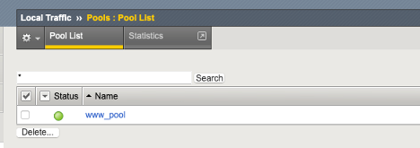
- Note: When we created the pool, we performed all our configuration on one page, but when we modify a pool the Resource information is under the Members tab
- Under Load Balancing section
- Change the Load Balancing Method to Ratio (Member)
- As you look at the drop down menu, notice most load balancing methods have two options, (Node) or (Member). You should know the difference between the two.

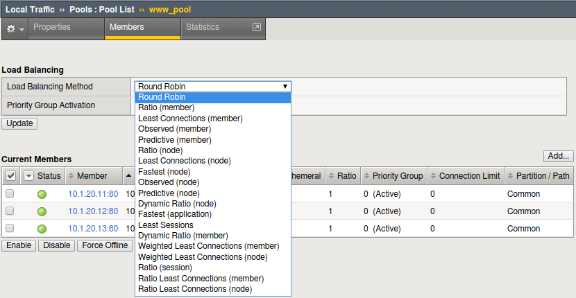
- Don’t forget the Update button
- Then under Current Members
- Select the first member in the pool 10.1.20.11:80.
- Under the Configuration section
- Change the Ratio of the member to 3

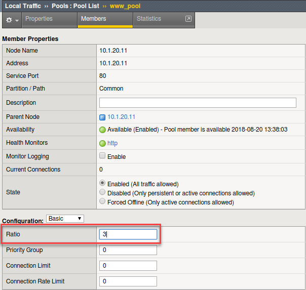
- Select the Update button
- Verification
- Check the pool statics by selecting Statistics in the top bar, if you are still in Local Traffic> Pools or by going to Statistics>Module Statistics>Local Traffic and selecting Pool from Statistics Type.
- Reset the statistics for your www_pool pool by checking the
boxes next to the pool members and hitting the Reset button
- Open up Super Jump Host and go to Guacamole, then Login and use Firefox to Browse to your www_vs (10.1.10.100) virtual server
- Refresh the browser screen several times (use “<CTRL>” F5)
- Select the Refresh button on the Statistics screen
- How many Total connections has each member taken?
- Is the ratio of connections correct between the members?
- Now go back and put the pool back to Round Robin Load Balancing
Method
- Reset the statistics
- Refresh the virtual server page several times
- Refresh the statistics
- Does the ratio setting have any impact now?
Priority Groups Lab
Let’s look at priority groups. In this scenario we will treat the .13 server as if it was is in a disaster recovery site that can be reached over a backhaul. To maintain at least two members in the pool for redundancy and load sharing, our customer would like to use it during maintenance periods or if one of the two other pool members fails.
- Go to Local Traffic>Pools>www_pool
- Select the Members tab.
- Set the Load Balancing Method back to Round Robin
- Set the Priority Group Activation to Less than … 2 Available Members.
- Select the Members tab.

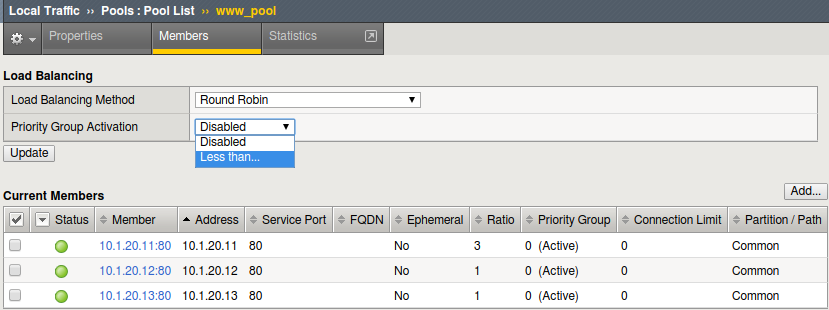
- Don’t forget the Update button
- Select the pool members 10.1.20.11 and 10.1.20.12 and set
their Priority Group to 2.
- This will allow you to change the priority on that particular member.

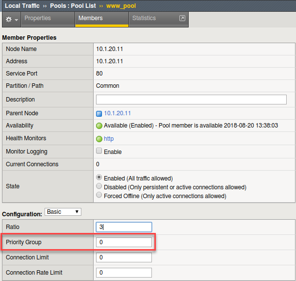
- Review your settings and let’s see how load balancing reacts now.
- Select the Statistics tab.
- Reset the pool statistics.
- Open up Super Jump Host and go to Guacamole, then Login and use Firefox to browse to your virtual server and refresh several times.
- Refresh you statistics.
- Are all members taking connections?
- Which member isn’t taking connections?
- Let’s simulate a maintenance window, or an outage, by disabling a pool member in the highest priority group. As this will drop the number of active members below 2, this should cause the low priority group to be activated.
- Select the member in the Priority Group 2 and Disable that pool
member.
- Select the Disable button

- The status indicator now goes to black, indicating the member has been disabled
- Once again, select Statistics, reset the pool statistics, browse to the virtual server and see which pool members are taking hits now.
Tip
Once you are done testing re-enable your disabled pool member.
Monitor Labs
Objective:
- Build a default monitor for nodes
- Build a content monitor for your pool
Default Monitors
- Go to Local Traffic>Nodes, note the Status.
- Notice there are Nodes in this table even though we never specifically configured them under the Node portion of the GUI. Each time a unique IP address is placed in a pool, by default, a corresponding node entry is added and assigned the default monitor (if any).
- Select the Default Monitor tab.

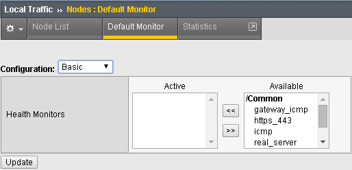
- Notice we have several options, for nodes you want a generic monitor, so we will choose icmp.
- Select icmp from the Available box and hit the arrows button pointing to the left to place it in the Active box.
- Click on the Update button to finalize your changes.
Select Node List or Statistics from the top tab.
- What is the Status of the Nodes?
Select Statistics>Module Statistics>Local Traffic
- What is the Status of your Nodes, Pool and Virtual Server?
Content Monitors
The default monitor simply tells us the IP address is accessible, but we really don’t know the status of the particular application the node supports. We are now going to create a monitor to specifically test the application we are interested in. We are going to perform a basic content check of our web site to determine it the servers are responding properly.
- Open up Super Jump Host and go to Guacamole, then Login and use Firefox to browse to http://10.1.10.100. There are a number of content items you could use to check the site status. You could check for text on this page. You could view the source code and check for a text string not normally visible to the user. You can also look in the HTTP header information being returned.
- We will be looking for the HTTP status “200 OK” in the HTTP header information as our receive string to determine availability.
- Select Local Traffic>Monitors on the side-bar and select the plus (+) sign, or the Create button.

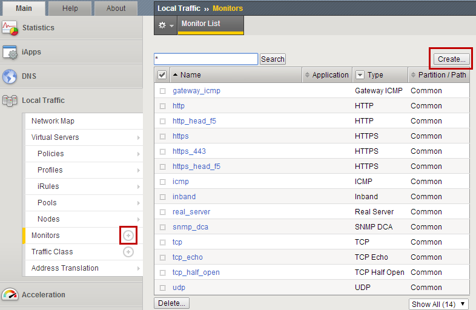
- Now we can create a monitor to check the content of our web page to
ensure things are running properly.
- Name: www_test
- Type: HTTP

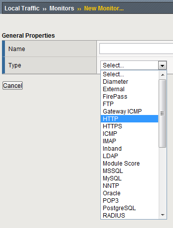
Once you have selected your parent (Type) monitor, you can access the Configuration section
- Send String: Enter the command to retrieve the page you want GET /index.php HTTP/1.0\r\n\r\n
- In the Receive String box put “200 OK” (no quotes)
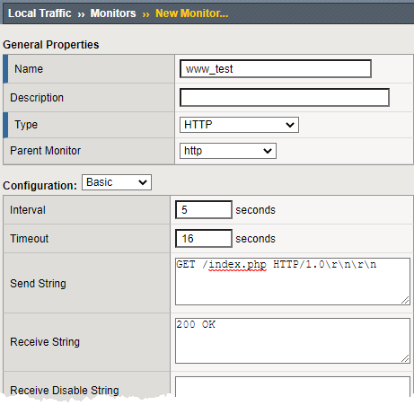

Note
The receive string is not case sensitive.
- Click Finish and you will be taken back to Local Traffic>Monitors

- Where is your new Monitor?
- Hint: Check the lower right hand corner of the Monitors list, here you can go to the next page or view all Monitors
- You can change the number of records displayed per page in System>Preferences
- Go to Local Traffic>Pools>www_pool and choose Properties
from the top bar.
- Remove the http monitor from the Active box.
- Select the www_test monitor from the Available monitor’s window in the Configuration section and move it to the Active window.

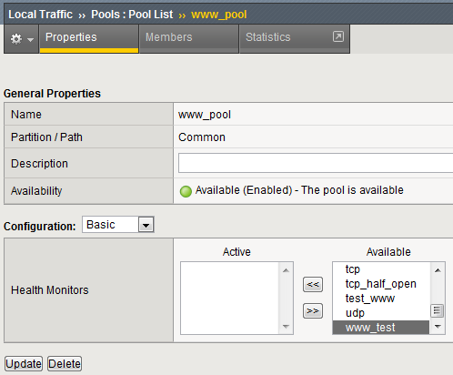
Hit Update to apply the change.
- Select Statistics from the tabs.
- What is the status of the pool and its members?
- Go to Local Traffic>Virtual Servers, what is the status of your
virtual server?
- Open up Super Jump Host and go to Guacamole, then Login and use Firefox to browse your www_vs virtual server. Which members are taking traffic?
- Just for fun reverse the monitor. Now when 200 OK is returned it indicates the server is not responding successfully. You can see where this would be useful if you were looking for a 404 (bad page) response. Once completed, please go back and undo your changes to the monitor.
Persistence Labs
In this lab we will configure a couple types of persistence and view their behavior. For persistence, profiles will have to be created and attached to our virtual server.
Lab Requirements:
- Prior to beginning the lab verify your www_pool has been set to the following parameters:
- Load Balancing Method: Round Robin
- Priority Group Activation: Disable
- The members Ratio and Priority Group mean nothing since we aren’t using Ratio load balancing and Priority Groups are disabled.
- Hit Update
- Hit your virtual server several times, you should see all 3 servers respond.
Simple (Source Address) Persistence
- Go to Local Traffic>Profiles and select the Persistence tab.
- From the Persistence Profiles screen select the Create button.
- At the New Persistence Profile screen enter:
- Name: my-src-persist
- Persistence Type: Source Address Affinity
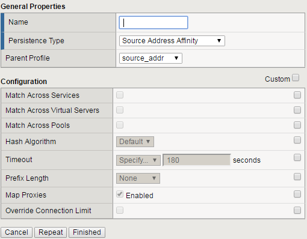
- This will add the Configuration section to the General Properties section.
- Note the parent profile.
- In the Configuration section, set the
- Timeout: 60 seconds
- Prefix Length: None
- This is the default, and is a /32 prefix (255.255.255.255 mask).
- Each new IP address will create a new persistence record.


Hint
You can’t change the settings until you have checked the Custom box. Hey, I didn’t write the GUI, but actually this is very useful in knowing which configuration items were modified from the default.
- You have just created your first custom Profile.
- Note the check box for your new custom profile isn’t grayed out and can be selected to allow you to delete the profile if desired.
- Now let’s attach our new profile to the virtual server.
- Go to Local Traffic>Virtual Server and ….
- Select www_vs and the Resources tab or ….
- Take the shortcut directly to the Resources of the virtual server. (Can you find it?)
Note
When we created the Virtual Server everything was on a single page, we find when we return to modify the Virtual Server the Properties and Resources are on different pages.
g. Set the Default Persistence Profile to my-src-persist.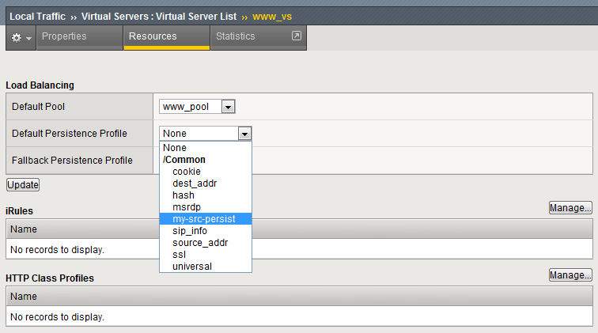
- Don’t forget to Update before leaving the page. (Be careful, someday I will quit telling you that.)
- Testing Source Address Affinity
- At this point you may want to open a second browser window to the management GUI.
- For one management window go to Statistics>Module Statistic>Local Traffic
- Select Persistence Records for the Statistics Type menu
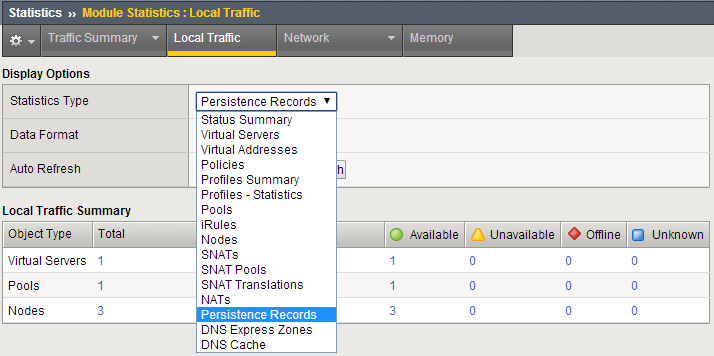
At this point you will see that Persistence Records statistics display has been disabled in version 17.5.1. A TMSH database command is required to activate it.
on bigip01 click on Access and then Web Shell
- tmsh run /util bash and press enter
- tmsh and press enter
- modify sys db ui.statistics.modulestatistics.localtraffic.persistencerecords value true and press enter


Tab completion will make this a little easier
- Now, in this window you can watch you persistence records. You may want to set Auto Refresh to 20 seconds.
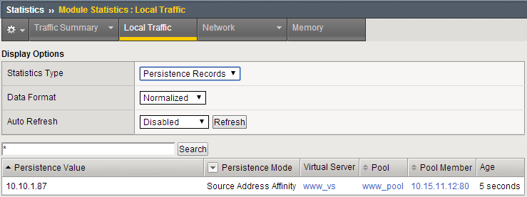
- In your other management GUI window go to www_pool and clear the member statistics.
- Open up Super Jump Host and go to Guacamole, then Login and use Firefox and browse to your virtual server and refresh several times.
- How many members are taking traffic?
- Check your Persists Records window, are the any persistence records?
- If you are not Auto Refreshing, don’t forget to hit Refresh
- Refresh your web page prior to the Age column reaching 60. What happens?

Cookie Persistence (Cookie Insert)
- Go to Local Traffic>Profiles>Persistence tab and hit Create
- Let’s name our profile my_cookie_insert (original isn’t it)
- Our Persistence Type will be Cookie
- This brings us to the Configuration section.
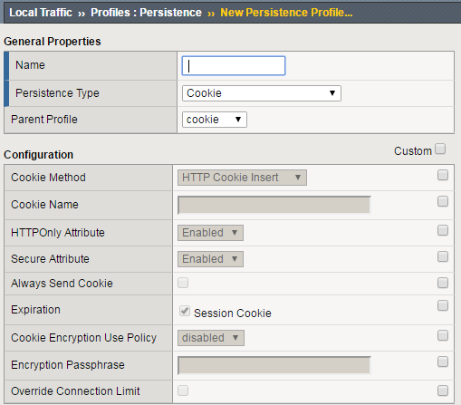
- As you can see the default Cookie Method is HTTP Cookie Insert, so we won’t have to modify the Cookie Method
- The BIG-IP will also create a cookie name for you using a combination of “BIGipServer” and the pool name the virtual server service. We will take this default also.
- We will use a session cookie. Which means the cookie is deleted when the browser is closed.
- Select Finished
- Now attach your cookie persistence profile to your virtual server’s Default Persistence Profile
Go to Local Traffic>Virtual Server>www_vs>Resources tab
- Set the Default Persistence Profile to my_cookie_insert
- Hit Update
- Whoa! Did you just get this error message?
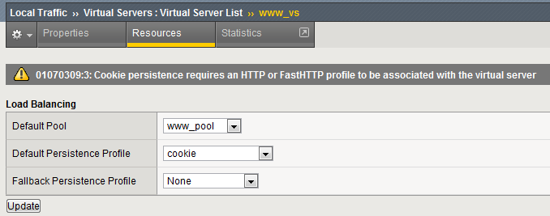
- Remember what we said earlier about some Profiles requiring prerequisite Profiles? Since we are looking in the HTTP header for the cookie the prerequisite for the Cookie Profile is the HTTP profile.
- We will have to go to the virtual server to add the HTTP profile, prior to adding the Cookie Persistence profile.
- Select the Properties tab on your virtual server
- Go to HTTP Profile (client) in the Configuration section and select the default HTTP (http) profile.
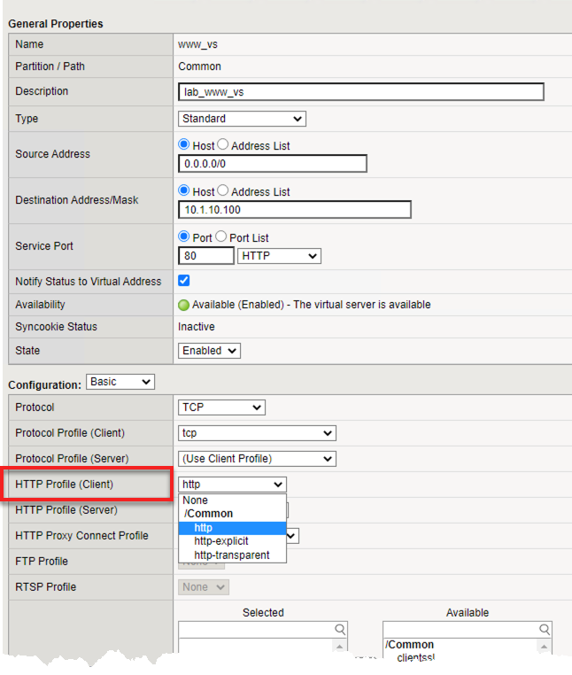
- Hit the Update button
- Now we can go back to the Resource tab and add our cookie persistence profile.
Testing cookie persistence.
If you wish you can watch the member statistics to validate your persistence.
Open up Super Jump Host and go to Guacamole, then Login and use Firefox and Open a new browser session to your virtual server and refresh several times.
Does the page ever change?
Did you hit a different server?
Refresh several times. Are you hitting the same server?
Let’s take a look at the cookie.
- On the web page of the demo application right click and select Inspect. This should work on most browsers.
- In the Element bar of the Inspect window select Network and refresh your web page.
- In the Name section of the Inspect window on the content select f5demo.css and Cookies on the Name bar. Here you will see the BIG-IP cookie that was inserted.
Tip
Inspect is your friend. Learn to use it. It will aid in debugging, iRules, monitors and more.
- Before proceeding to the next lab please remove the persistence profile from the virtual server.